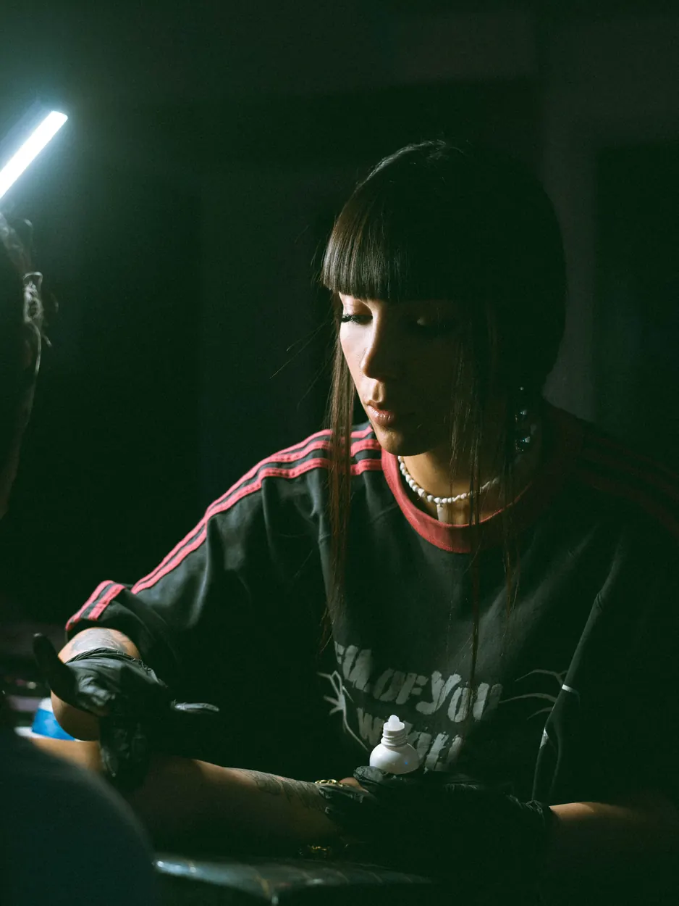
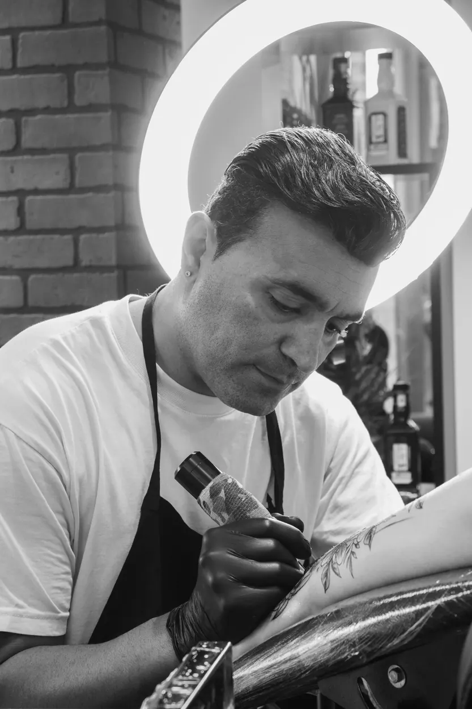
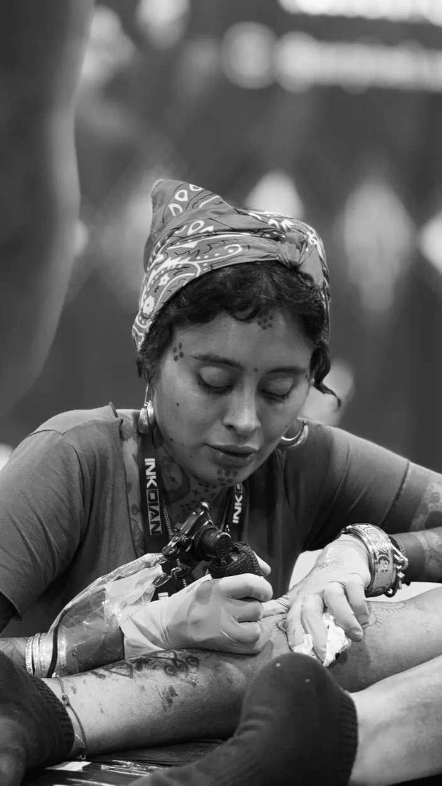
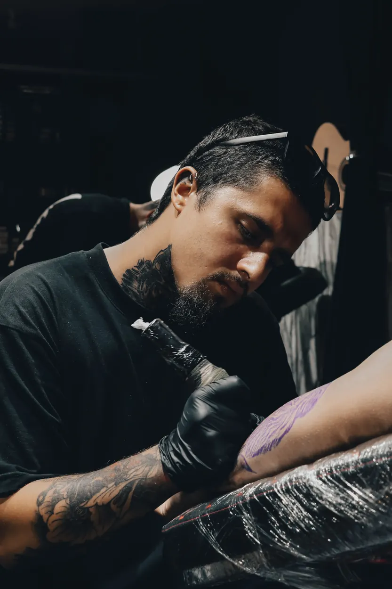

Artistas

Lucía Ferrer
Lucía tatúa desde 2017 y se ha especializado en fine line y motivos botánicos. Le gustan las piezas pequeñas y delicadas, de trazo fino y con mucho aire, pensadas para envejecer bien en la piel. Antes de cada cita prepara un boceto a mano que ajusta contigo hasta que encaja con tu idea.
- Fine line
- Botánico
- Micro



Dani Ortega
Dani lleva más de diez años tatuando y trabaja con negro sólido, geometría y patrones de inspiración tribal. Le gustan las piezas grandes que siguen la forma del cuerpo, como espaldas, brazos y piernas completos. Las planifica por sesiones para que el proceso sea cómodo y el negro quede uniforme.
- Blackwork
- Geométrico
- Piezas grandes



Inés Calvo
Inés viene de la ilustración y dibuja cada pieza ornamental a medida, con filigranas, enredaderas y encajes que acompañan el movimiento del cuerpo. Trabaja sobre todo hombros, costados y brazos. Le gusta diseñar en la propia piel con rotulador antes de tatuar para ajustar cada curva.
- Ornamental
- Filigrana
- A medida



Marco Sanz
Marco es calígrafo y tatuador. Diseña letras a mano, desde góticas y caligrafía clásica hasta tipografías inventadas para cada palabra, y cuida que se lean bien con los años. Si tienes una frase o un nombre, te propone varias versiones antes de elegir la definitiva.
- Lettering
- Caligrafía
- Letras a mano